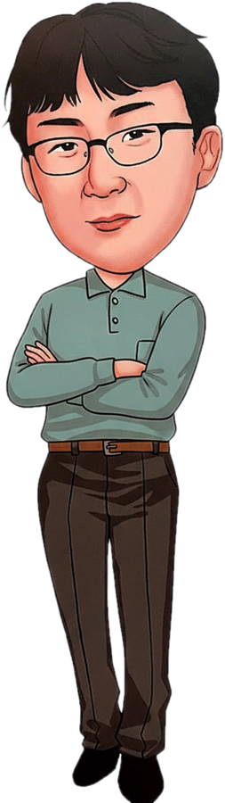

수학으로 3D 영상 만들기
반비례·일차함수·부채꼴로 3D 영상의 원리를 분석하고 직접 제작해요. 러시아 블라디보스토크 현지 학생들과도 나눈 수업.
3D 영상, 테셀레이션, 매쓰투어, 바이브코딩까지 수학을 직접 만들고 체험하는 수업을 디자인하는 교사

반비례·일차함수·부채꼴로 3D 영상의 원리를 분석하고 직접 제작해요. 러시아 블라디보스토크 현지 학생들과도 나눈 수업.
정다각형·헤쉬 타일링 19가지 유형부터 펜로즈·아인슈타인 타일링까지.
도시를 수학 교실로. 인천대공원·인하대·차이나타운을 게더타운·로블록스·웹앱으로.
학생 생각 기록 → 오개념 진단 → 처방 수업. AI 맞춤 피드백 수학 일기 플랫폼.
중1 단원별 체험형 웹앱 27종, 계산왕 대회 앱, 알지오3D 그림판, 수업 화면 모니터링.
피타고라스 음률 계산기, 파이송(π Song), 프랙털 아트, 넓이 역설 마술.